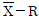
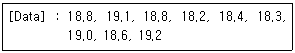
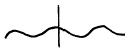
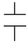
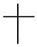
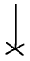

주조기능장 (2003-07-20 기출문제)
1과목: 임의 구분
1. 고체연료에서 공업분석을 할 때 시험항목에 포함 되지않는 것은?
- 황분
- 휘발분
- 고정탄소
- 회분
(정답률: 83%)

2. 흑연 도가니에 있어서 10번 도가니라 함은?
- 1회에 텅스텐 10kg을 녹일수 있는 도가니
- 1회에 구리 10kg을 녹일수 있는 도가니
- 주강을 1일 10회이상 녹일수 있는 도가니
- 철을 1일 10회이상 녹일수 있는 도가니
(정답률: 88%)
3. 원심 주조법에 의하여 만들어진 주철관의 조직 중 가장 치밀한 부분은?
- 내부 안쪽부분
- 중간부분
- 바깥쪽 표면부분
- 전체부분
(정답률: 92%)
4. 주조품 내부에 있는 기공의 결함을 찾는데 적합한 비파괴검사법은?
- 누설탐상시험
- 와전류탐상시험
- 초음파탐상시험
- 형광침투탐상시험
(정답률: 91%)
5. Cupola에서 tuyere ratio(송풍구비)란?
- 유효고를 노의 내경으로 나눈 값이다.
- Tuyere의 수량을 말한다.
- Tuyere level에서 장입구까지의 높이이다.
- Tuyere level의 노의 단면적을 tuyere의 총단면적으로 나눈 값이다.
(정답률: 90%)
6. 노블락계의 폐놀 수지 점결제를 사용하는 것으로 크로닝 프로세스라고 하는 것은?
- CO2법
- Full mould법
- Investment법
- Shell mould법
(정답률: 71%)
7. 금형모형을 만들기 위하여 목형에 이중 수축여유, 기계가공 여유 등을 붙여 만드는 모형은?
- 고물개형 모형(Strickle Pattern)
- 매치 플레이트(Match Plate)
- 원형 모형(Master Pattern)
- 패턴 플레이트(Pattern Plate)
(정답률: 72%)
8. 주강의 탈산제로서 탈산능력이 가장 강력한 것은?
- Fe-S
- Ca-Si
- Si-Mn
- Aℓ
(정답률: 72%)
9. 주물사가 갖추어야 할 조건 중 틀린 것은?
- 용해성이 커야 한다.
- 통기성이 좋아야 한다.
- 주형제작이 쉬워야 한다.
- 반복사용이 가능하여야 한다.
(정답률: 85%)
10. CO2주형을 만들고자 할 때 주형의 붕괴성을 향상시키기 위한 첨가제로 적합하지 않은 것은?
- 벤토나이트
- 코크스분말
- 톱밥
- 피치분말
(정답률: 86%)
11. 가압식 탕구계가 가지는 잇점이라 할 수 없는 것은?
- 탕구계가 용탕으로 충만된다.
- 탕구계 전체에 압력이 유지된다.
- 용탕 손실이 적어 회수율이 높아진다.
- 난류가 적어 이물질 혼입이 적다.
(정답률: 71%)
12. 주물을 만들 때 설치하는 압탕의 설계와 배치가 옳지 않는 것은?
- 압탕의 응고는 주물의 응고시간보다 길어야 한다.
- 압탕은 주물의 방향성 응고를 하도록 설치한다.
- 압탕의 모양은 응고시간에 관계없다.
- 일반적으로 응고수축이 크면 압탕도 크게 한다.
(정답률: 81%)
13. 주형 또는 코어 제조시 모형(模型)으로서 반드시 금형을 사용해야 하는 조형법은?
- 생형법
- 쉘형법
- 유사형법
- CO2 형법
(정답률: 80%)
14. 다음 중 두께가 가장 얇은 주형을 제작하는 조형법은?
- N-Process(N-형법)
- CO2 Process(가스형법)
- Shell mold Process(쉘형법)
- Investment Process(메몰 주조법)
(정답률: 77%)
15. 염기성 전로의 특징 중 틀린 것은?
- S.P 제거가 용이하다.
- 샤못트 벽돌이 사용된다.
- 염기도가 높은 슬랙의 사용이 가능하다.
- 저품위 원료로도 조업이 가능하다.
(정답률: 77%)
16. 비가압식 탕구방안의 탕구비에 가장 적당한 것은?
- 1:4:4
- 1:2:1
- 0.25:1:0.5
- 2:1:1
(정답률: 85%)
17. 도면에 의하여 모형을 제작할 때 조형 또는 주조를 위하여 도면에 표시한 형상(모형)을 모형에 다소 변경시켜 만드는 사항에 해당하지 않는 것은?
- 라운딩
- 덧붙임
- 기울기(인발구배)
- 수축여유
(정답률: 63%)
18. Die cast 기의 능력은 무엇으로 나타내는가?
- 금형의 체결압력
- 제품의 크기
- 주입 속도
- 금형 무게
(정답률: 82%)
19. 나무의 심재가 갖고 있는 성질로 맞는 것은?
- 수분이 많고 연하다.
- 수분이 많고 단단하다.
- 수분이 적고 연하다.
- 수분이 적고 단단하다.
(정답률: 88%)
20. 목재를 구입하여 중량을 측정하였더니 중량이 800g 이었다. 건조 후 중량이 750g 이 되었다면 이 때의 함수율(%)은 얼마인가?
- 약 6.7
- 약 7.3
- 약 8.3
- 약 9.7
(정답률: 75%)
2과목: 임의 구분
21. 모형의 수리 및 보존 관리에 대한 설명 중 거리가 가장 먼 것은?
- 부분적 수리라도 전부분을 계측 보수한다.
- 보관 장소를 선정하여 입체적으로 정리 보관한다.
- 일정 온도를 유지하여 흡습에 의한 변형을 방지한다.
- 모형의 크기별로 구분하여 습하게 영구 보관한다.
(정답률: 79%)
22. 코어 프린트의 구비조건이 아닌 것은?
- 코어의 위치를 결정한다.
- 코어를 고정한다.
- 코어의 가스빼기 역할을 한다.
- 코어가 자유롭게 움직일 수 있는 충분한 여유를 준다.
(정답률: 85%)
23. 대패에 덧날을 끼우는 이유로 가장 중요한 것은?
- 원날이 빠지지 않게 한다.
- 대패 작업에 힘이 적게 든다.
- 대패밥에 거스럼이가 일지 않게 한다.
- 원날을 보호하기 위한 것이다.
(정답률: 86%)
24. 분할형의 상.하를 정확히 맞출 수 있으며 목형의 상형을 하형에서 직각으로 뽑을 수 있도록 만든 것은?
- 주먹장부맞춤
- 쪽매맞춤
- 맞대맞춤
- 다우얼맞춤
(정답률: 83%)
25. 대형주강주물에서 일반적으로 적용되는 수축율은 어느 정도인가?
- 0.5/1000
- 2/1000
- 7/1000
- 20/1000
(정답률: 88%)
26. 목재에서 수축과 변형이 가장 작은 방향은?
- 변재 방향
- 나이테 방향
- 섬유 방향
- 수선 방향
(정답률: 75%)
27. 일반적인 도면에서 중간부를 생략하여 그리지 않는 것은?
- 형강
- 파이프
- 테이퍼 축
- 리벳
(정답률: 90%)
28. 가로 40mm, 세로 35mm, 길이 80mm인 각재의 압축시험에서 파괴시 외력이 210kgf 이었다면 압축 강도(kgf/cm2)는?
- 15
- 150
- 18.7
- 187
(정답률: 58%)
29. 표준 고속도 강의 W, Cr, V의 성분비는?
- 18:4:1
- 18:9:1
- 15:9:1
- 15:3:1
(정답률: 88%)
30. 미이하나이트(meehanite)법 주철제조시 사용되는 접종제는?
- Fe-Mn
- Mg-Zn
- Ca-Si
- Fe-S
(정답률: 84%)
31. 다음 중 열전도가 큰 것부터 순서로 된 것은?
- Cu > Ag > Au > Al > Fe
- Cu > Ag > Au > Fe > Al
- Ag > Cu > Au > Al > Fe
- Ag > Au > Cu > Al > Fe
(정답률: 75%)
32. 순수 시멘타이트(Cementite)의 AO변태 온도는 약 얼마인가?
- 50℃
- 150℃
- 210℃
- 270℃
(정답률: 89%)
33. 특수강에서 내식성과 내산성을 증가시키는 가장 대표적인 원소는?
- C
- Ni
- S
- Pb
(정답률: 91%)
34. 철강 재료에 대한 설명 중 틀린 것은?
- 강괴의 종류는 탈산도에 따라 분류한다.
- 킬드강은 주조용강으로도 사용할 수 있다.
- 상부베이나이트는 하부베이나이트보다 경도가 높다.
- 보통 주철의 조직상은 흑연, 펄라이트와 시멘타이트이다.
(정답률: 80%)
35. Austenite계 Stainless steel에 해당되는 것은?
- 18% Co강
- 18% Mo강
- 18% Crㆍ8%Ni강
- 17-4 PH 강
(정답률: 92%)
36. 기계를 운전하기 전에 해야 할 일과 관련이 가장 적은 것은?
- 공구 준비
- 급유
- 기계 점검
- 제품 분석
(정답률: 90%)
37. 직선형의 균열로서 내부 수축응력에 의하여 발생하는 냉간균열(cold crack)의 가장 큰 원인은?
- 경한 재질로서 수축량이 큰 경우
- 큰 주물의 지느러미가 발생한 경우
- 주물사의 배합이 부적당할 경우
- 두께가 불균일한 대형주물을 급속히 냉각한 경우
(정답률: 85%)
38. 주형을 진동시키거나 들어올릴 때 모래가 떨어지는 현상의 결함은?
- Cold shut
- Crushing
- Drop or drop out
- Drawing
(정답률: 80%)
39. 분진에 습기를 부여해서 포집하는 분진 측정의 방법은?
- 흡착식
- 침강식
- 충돌식
- 원심식
(정답률: 83%)
40. 금속부분에 대한 한국산업규격이 규정하는 기호는?
- KSA
- KSD
- KSG
- KSM
(정답률: 87%)
3과목: 임의 구분
41. 주물의 압탕효과를 증가시킬 수 있는 방법으로 틀린 것은?
- 덧붙임(padding)을 한다.
- 칠(chill)을 제거한다.
- 압탕부에 단열재나 발열재로 만든 슬리이브를 사용한다.
- 압탕의 형상계수(체적/표면적)를 크게한다.
(정답률: 85%)
42. 주철의 기계적 성질 중 상온에서 충격치가 가장 높은 것은?
- 페라이트형 구상흑연주철
- 펄라이트형 구상흑연주철
- 흑심가단주철
- 펄라이트형 가단주철
(정답률: 62%)
43. 유압펌프의 고장 중 소음이 클 경우 원인과 대책이 서로 맞지 않는 것은?
- 흡입관이 가늘거나 막힘-흡입진공도를 200 mmHg 이하로 한다.
- 탱크 안에 기포가 있음-탱크 안의 오일을 새 것으로 교환한다.
- 색션필터의 막힘 또는 용량부족-필터의 청소 또는 용량이 큰 것을 사용한다.
- 베어링이 마모되어 있음-펌프를 수리하거나 축심이 맞는지 조사한다.
(정답률: 78%)
44. 코어 브로잉 머신(core browing machine)의 장점 중 관련이 가장 적은 것은?
- 압축공기와 함께 슈팅하기에 신속,정확한 조형 방식이다.
- 코어의 크기에 따라 소형에서 대형의 기계제작이 가능하다.
- CO2 코어일 때는 CO2 가스취입장치와 조합하여 사용하면 능률적인 취입이 가능하다.
- 기계구조 특성상 수직형으로만 블로잉(browing)할 수 있다.
(정답률: 76%)
45. 압력을 나타내는 단위 기호는?
- N
- Pa
- J
- W
(정답률: 89%)
46. 마그네슘 합금 용해시 수소가스를 제거하기 위하여 사용되는 가스는?
- 탄산가스
- 불활성가스
- 인산염가스
- 후레온가스
(정답률: 80%)
47. 인베스트먼트 주조법에서 주로 사용되는 모형재료는?
- 수지
- 왁스
- 목재
- 석고
(정답률: 86%)
48. 규사의 주성분을 결정하는 것은?
- Al2O3
- MgO
- SiO2
- CaO
(정답률: 89%)
49. 주물의 검사방법 중 파괴검사 방법에 해당되는 것은?
- 육안검사
- 조직검사
- 치수검사
- 중량검사
(정답률: 93%)
50. 목형 제작시 구석면을 라운딩(rounding)하는 이유에 해당되지 않는 것은?
- 불순물이 석출되어 약해짐을 방지하기 위하여
- 편석(segregation)을 방지하기 위하여
- 표면 냉각 조건을 좋게하여 크랙을 방지하기 위하여
- 목형의 외관을 좋게하기 위하여
(정답률: 85%)
51. 생산현장에서 자동화로 얻어지는 효과로 옳지 않은 것은?
- 생산성의 향상
- 노동인력의 증가
- 노무비의 감소
- 원자재 비용의 감소
(정답률: 89%)
52. 인베스트먼트 캐스팅(Investment casting)의 점결제는?
- 왁스(Wax）
- 페놀레진(Phenol resin）
- 칼슘시리케이트(Calcium silicate）
- 에칠 시리케이트(Ethyle silicate）
(정답률: 75%)
53. 도면에 표시되는 치수는 어떤 치수를 기입하는가?
- 소재 준비 치수
- 가공 여유 치수
- 가공 후 다듬질전 치수
- 가공 후 다듬질 완료치수
(정답률: 86%)
54. 주철에서 탄소(C)가 4.3%일 때의 용융점은 1148℃이고 오스테나이트와 시멘타이트와의 공정 조직은?
- 마텐자이트
- 펄라이트
- 페라이트
- 레데뷰라이트
(정답률: 85%)
55. 어떤 측정법으로 동일 시료를 무한 횟수 측정하였을 때 데이터의 분포의 평균치와 참값과의 차를 무엇이라 하는가?
- 신뢰성
- 정확성
- 정밀도
- 오차
(정답률: 85%)
56. 예방보전의 기능에 해당하지 않는 것은?
- 취급되어야 할 대상설비의 결정
- 정비작업에서 점검시기의 결정
- 대상설비 점검개소의 결정
- 대상설비의 외주이용도 결정
(정답률: 89%)
57. 관리한계선을 구하는데 이항분포를 이용하여 관리선을 구하는 관리도는?
- Pn 관리도
- U 관리도

관리도- X 관리도
(정답률: 70%)
58. 로트(Lot)수를 가장 올바르게 정의한 것은?
- 1회 생산수량을 의미한다.
- 일정한 제조회수를 표시하는 개념이다.
- 생산목표량을 기계대수로 나눈 것이다.
- 생산목표량을 공정수로 나눈 것이다.
(정답률: 78%)
59. 다음의 데이터를 보고 편차 제곱합(S)을 구하면? (단, 소숫점 3자리까지 구하시오.)

- 0.338
- 1.029
- 0.114
- 1.014
(정답률: 86%)
60. 공정 도시기호중 공정계열의 일부를 생략할 경우에 사용되는 보조 도시기호는?




(정답률: 85%)